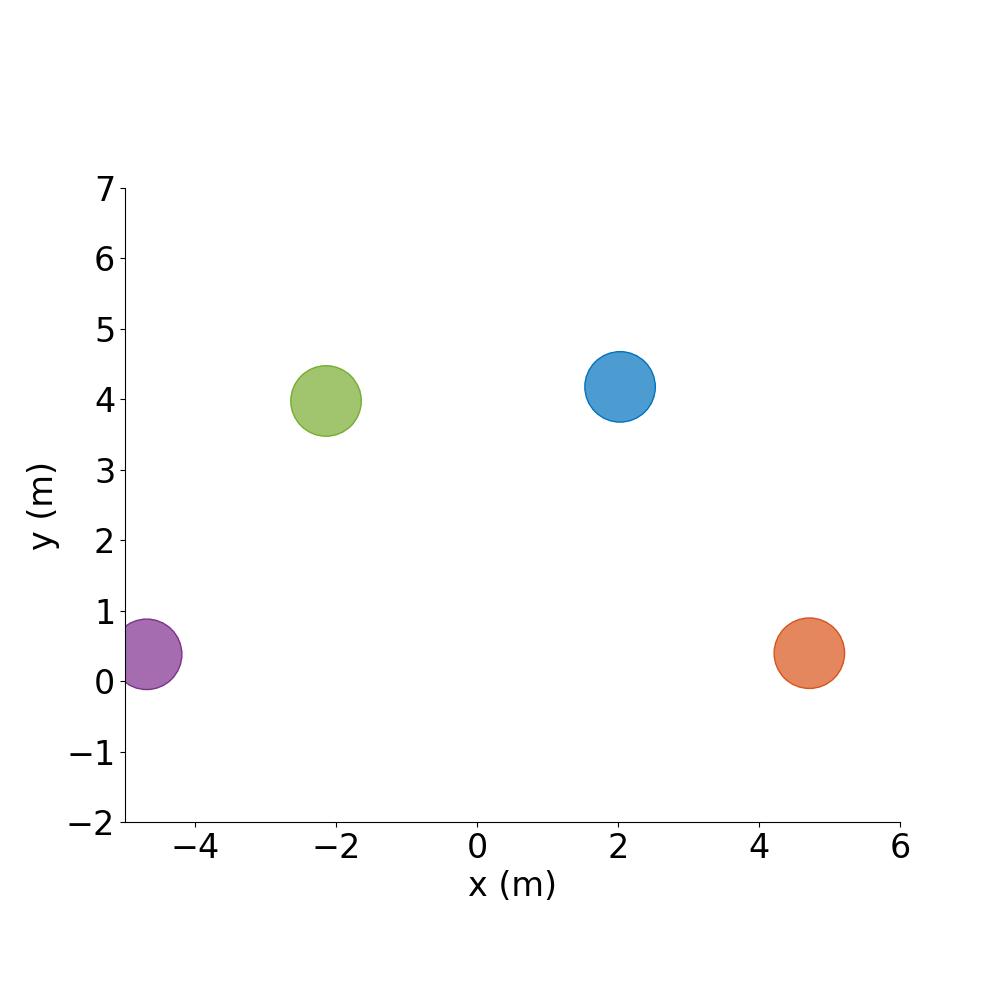
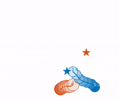

gym-collision-avoidance: Documentation¶
In this multiagent environment, agents try to get to their own goal location (specified at the start of each episode) by using one of many collision avoidance policies implemented. Episodes end when agents reach their goal, collide, or timeout. Agents can observe the environment through several types of sensors, act according to pre-implemented and extendable policies, and behave according to customizable dynamics models.
Objective: Provide a flexible codebase, reduce time spent re-implementing existing works, and establish baselines for multiagent collision avoidance problems.

Formation Control |

Policies Deployable on Hardware |
Many-Agent Scenarios |

Random Scenarios |
Policies Implemented¶
Learning-based:
SA-CADRL: Socially Aware Motion Planning with Deep Reinforcement Learning
GA3C-CADRL: Motion Planning Among Dynamic, Decision-Making Agents with Deep Reinforcement Learning
DRL_Long: Towards Optimally Decentralized Multi-Robot Collision Avoidance via Deep Reinforcement Learning
Model-based:
RVO/ORCA: Python-RVO2
Non-Cooperative (constant velocity toward goal position)
Static (zero velocity)
Desired Additions:
DWA
Social Forces
Additional learning-based methods
Other model-based methods
Centralized planners
…
If you find this code useful, please consider citing:¶
@inproceedings{Everett18_IROS,
address = {Madrid, Spain},
author = {Everett, Michael and Chen, Yu Fan and How, Jonathan P.},
booktitle = {IEEE/RSJ International Conference on Intelligent Robots and Systems (IROS)},
date-modified = {2018-10-03 06:18:08 -0400},
month = sep,
title = {Motion Planning Among Dynamic, Decision-Making Agents with Deep Reinforcement Learning},
year = {2018},
url = {https://arxiv.org/pdf/1805.01956.pdf},
bdsk-url-1 = {https://arxiv.org/pdf/1805.01956.pdf}
}